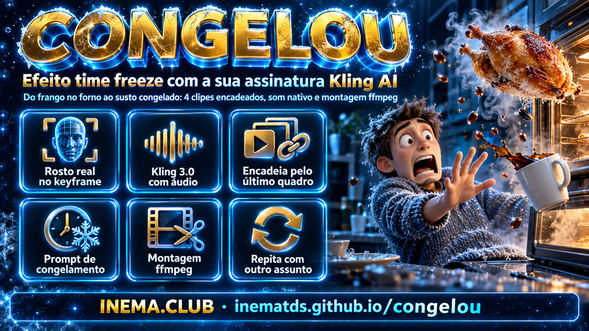
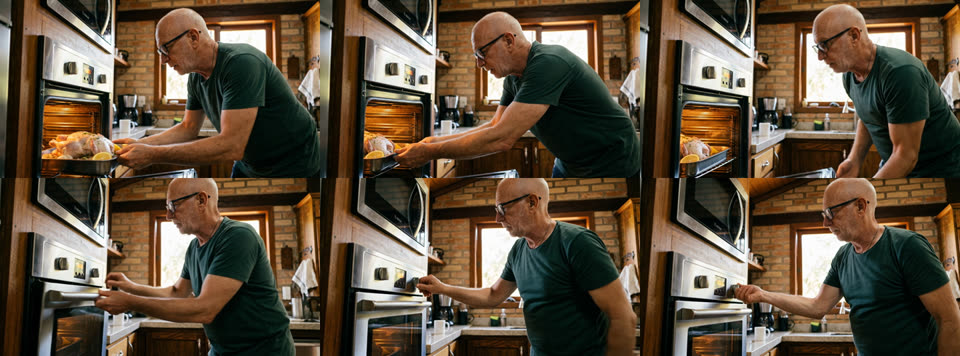
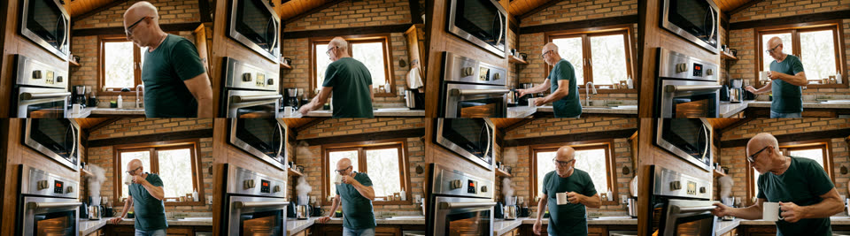
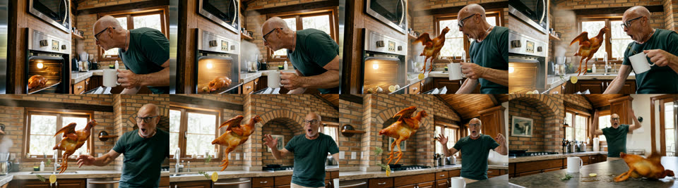
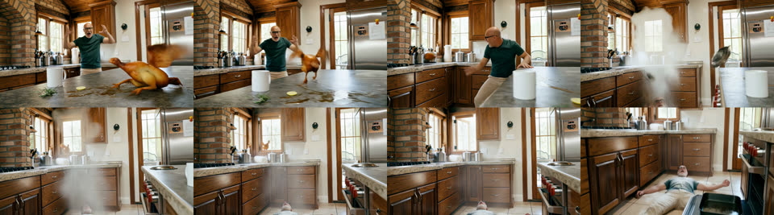

Um curta de ~38 segundos feito só com a assinatura Kling AI pelo CLI oficial: seu rosto real no primeiro quadro, 4 clipes encadeados, o efeito de congelamento e a montagem com som.

Frango no forno → café → abre o forno → o frango sai vivo → tudo congela e a câmera passeia pela cena → o tempo volta e vem o estrago.
A galinha sai no instante em que a porta abre. No congelamento tudo para, inclusive você, e só a câmera se move. Quando o tempo volta, o movimento anda um pedacinho e trava, anda e trava de novo — 4 paradas, cada uma mais curta, com o som sumindo em cada trava — e só então segue na velocidade natural. Sem câmera lenta: são quadros reais segurados no ffmpeg (montar_paradas.sh).
Você está com o prato na mão e abre o microondas pra colocar a comida, e sai um gato vivo e assustado. No susto, o prato escapa. Dois momentos congelados, em 4K e sem borrão: o gato no ar com a comida voando, e o prato estilhaçando no chão com cacos e arroz suspensos. Depois você derruba a cozinha inteira. Cada congelamento é uma foto 4K nítida (nitido.sh) com o movimento de câmera no ffmpeg (freeze.sh), porque nada nela se mexe nem borra. Prompts k4, N1, N3, F2, N5.
Não é um app, e sim uma receita testada: 3 scripts shell + prompts em texto. Cada peça pode ser trocada pra contar outra história.
O primeiro quadro é gerado a partir de uma foto real do seu rosto (Nano Banana Pro, dentro da própria Kling). O resto do filme herda esse rosto.
Cada clipe começa no último quadro do anterior. Mesmo personagem, mesma cozinha, mesma luz, sem “pular” entre as cenas.
Kling 3.0 com enable_audio: portas, passos, café, cacarejo e o silêncio do congelamento saem junto com a imagem. O ffmpeg só junta e normaliza.
Tudo pela sua conta Kling AI (CLI kling). Nada de Magnific, RunComfy ou outro revendedor: é a sua assinatura, os seus créditos.
| Clipe | O que acontece | Duração | Créditos Kling |
|---|---|---|---|
| k1 | Still: você colocando o frango no forno | imagem 2k | 20 |
| A | Empurra a assadeira, fecha o forno, gira o botão | 5s | 60 |
| B | Passa o café, toma um gole, volta e pega na porta | 8s | 96 |
| C | Frango vivo salta, tempo congela, câmera orbita, tempo volta | 15s | 180 |
| D | O estrago em tempo normal: farinha, panelas, escorregão, fuga pela janela | 10s | 120 |
Medido na conta (plano Pro): Kling 3.0 a 1080p com áudio sai por 12 créditos/segundo. O filme todo custou cerca de 476 créditos.
Três coisas: o CLI oficial da Kling logado na sua conta, ffmpeg e Python 3.
CLI oficial, cliente do MCP da Kling. Login via navegador (OAuth).
npm i -g @klingai/cli-global kling login kling account # plano + créditos
Pra extrair o último quadro, gerar contact sheets e montar o vídeo final.
sudo apt install ffmpegUsados pelos scripts pra ler o JSON da Kling e baixar os arquivos.
python3 --version curl --version
Os comandos abaixo são exatamente os que geraram o vídeo. Rode dentro da pasta do repo.
O who_am_i lista os modelos e parâmetros que a sua assinatura libera. Atenção aos defaults: o Kling 3.0 vem com 4k, áudio desligado e multi-shot ligado, e os scripts sobrescrevem os três.
kling who_am_i -q > who_am_i.json kling account
Uma foto sua + o prompt da cena. Sai um still 2k 16:9 que vira o primeiro quadro do filme.
./keyframe.sh ref/nei.jpg prompts/k1.txt # → keyframes/k1.png
Cada clip.sh gera o clipe, baixa, mede o áudio, faz um contact sheet e salva o último quadro, que é o início do próximo.
./clip.sh A keyframes/k1.png 5 # frango no forno ./clip.sh B keyframes/A_last.png 8 # café e volta ao forno ./clip.sh C keyframes/B_last.png 15 # frango vivo + TIME FREEZE ./clip.sh D keyframes/C_last.png 10 # o estrago
Abra clips/X_sheet.png (8 quadros ao longo do clipe). Se algo quebrou, refaça só aquele clipe: os seguintes partem do último quadro dele.
xdg-open clips/C_sheet.png
Padroniza em 1920×1080/24fps, corta o quadro repetido de cada emenda, junta com o áudio nativo e normaliza em -14 LUFS.
./montar.sh A B C D # → congelou_final.mp4
Ficam em prompts/. O do congelamento (C) foi adaptado do template freeze_effect_template_en.md, que é um esqueleto de cena, congelamento, câmera congelada, retomada e continuidade.
Photorealistic cinematic film still, 35mm, natural warm daylight. The man from image 1 (same face, bald head with short white hair on the sides, white stubble beard, black rectangular glasses, plain dark green t-shirt) stands in a cozy rustic home kitchen with exposed brick walls and dark wooden ceiling beams. He is bending slightly and sliding a metal roasting pan with a whole raw seasoned chicken (pale skin, herbs, garlic, lemon halves) into an open built-in stainless steel oven at waist height. [...]
ACTION: The man pulls the oven door open, holding his white coffee mug in his other hand. Hot steam pours out. Suddenly the whole plucked, half-roasted golden chicken jumps up ALIVE from the roasting pan and leaps out of the oven straight toward his face [...] droplets of hot grease, sprigs of rosemary, a lemon slice and a garlic clove fly out of the pan. [...] TIME FREEZE: At the peak of the chicken's leap, time stops completely. The chicken hangs motionless in mid-air [...] Nothing moves except the camera. FROZEN CAMERA: The camera slowly glides around the frozen scene [...] RESUME: Time resumes instantly at normal speed with no effect. The chicken crashes onto the kitchen counter [...] Sound: [...] during the freeze total silence with only a low high-pitched ringing tone [...]
Prompts completos: github.com/inematds/congelou/prompts.
Todo objeto suspenso precisa de uma causa. O alecrim voa porque o frango pulou da assadeira; o café voa porque a caneca virou no susto.
Peça “nothing moves except the camera” e descreva o caminho da câmera entre os objetos suspensos.
Descreva o áudio do freeze (“total silence with a low ringing tone”). O áudio nativo acompanha a mudança.
Contact sheets reais gerados pelo fetch.sh.




O pipeline não sabe nada de frango. Pra fazer outro vídeo, você reescreve os prompts e roda os mesmos três scripts.
Apresentação → preparação → o impossível (freeze) → consequência. Cada batida vira um clipe de 5 a 15s. Exemplo: “lavo o carro → vou buscar a mangueira → o carro sai andando sozinho → congela no ar sobre a poça → pousa e espirra lama em mim”.
mkdir ~/projetos/meu-freeze && cd ~/projetos/meu-freeze cp ~/projetos/congelou/{keyframe,clip,fetch,montar}.sh . mkdir prompts ref && cp minha-foto.jpg ref/
prompts/k1.txt é o primeiro quadro, e A.txt, B.txt… são os clipes. No clipe do congelamento, copie o esqueleto do freeze_effect_template_en.md e troque só o conteúdo. Coloque sempre uma linha Sound: no fim.
./keyframe.sh ref/minha-foto.jpg prompts/k1.txt ./clip.sh A keyframes/k1.png 5 ./clip.sh B keyframes/A_last.png 8 ./clip.sh C keyframes/B_last.png 15 OUT=meu_filme.mp4 ./montar.sh A B C
Dá pra pedir em linguagem natural. Diga “use a minha assinatura klingai”, pra ele usar o CLI kling, e passe a história e o arquivo de template do freeze.
# exemplo de pedido "use o klingai direto e crie esta história: ... congelo como este prompt ~/projetos/congelou/prompts/freeze_effect_template_en.md; junte com som"
Detalhes que economizam créditos na próxima vez.
enable_audio true e prefer_multi_shots false.fetch.sh baixa assim que o clipe termina.